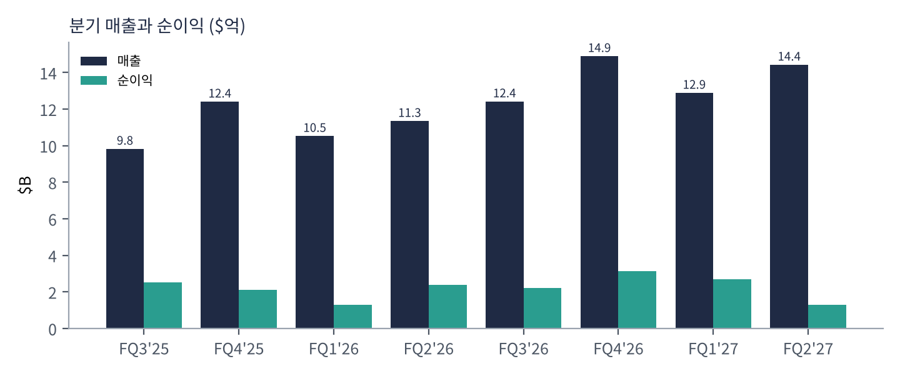
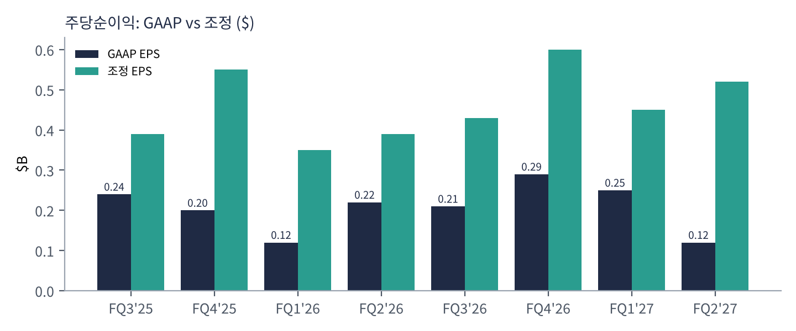
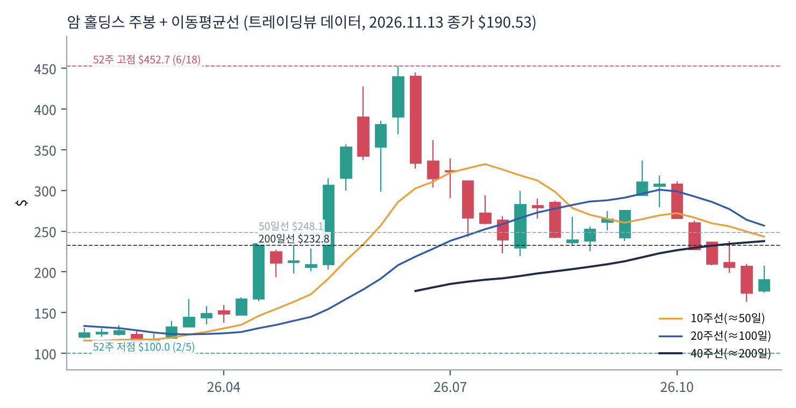
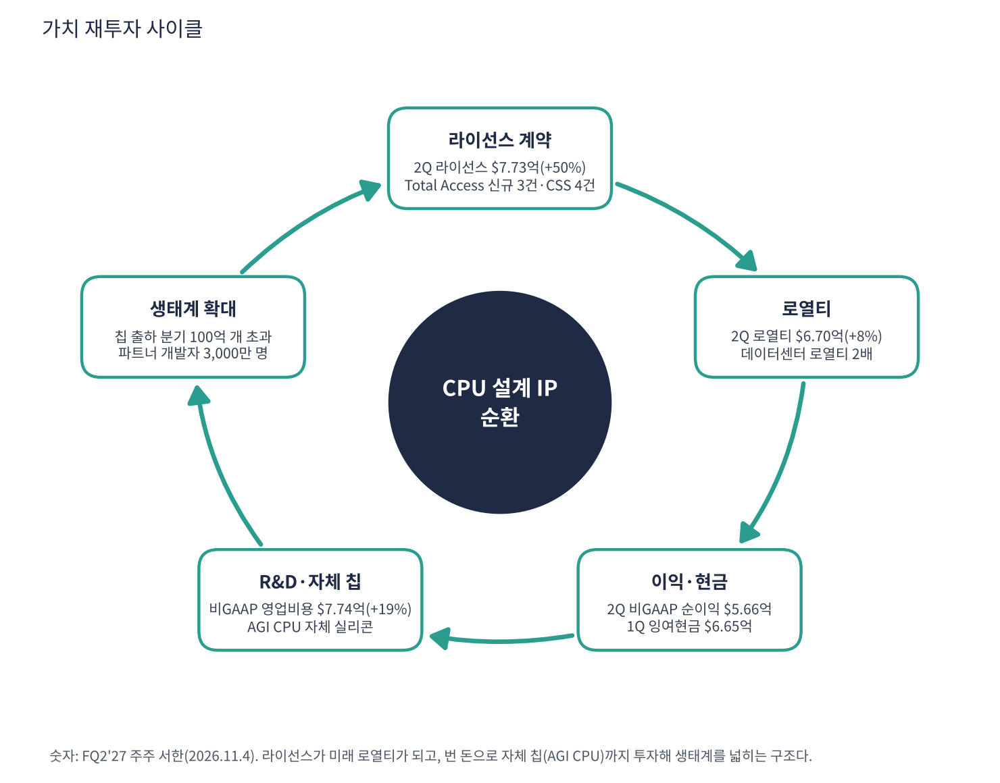

암 홀딩스는 스마트폰·서버·차량용 칩의 CPU 설계도를 라이선스하고 칩이 팔릴 때마다 로열티를 받는 회사다. 라이선스 선행 지표는 강하지만 로열티 성장이 8%에 그치고, PER이 매우 높아 PEG가 크게 나오는 회사다.
| 항목 | 내용 |
|---|---|
| 종목 | Arm Holdings (ARM) · NASDAQ · CPU IP·반도체 설계 · 영국 케임브리지 |
| 멀티플 | PER 218.4배(GAAP TTM) · P/S 39.45배 (11/13 종가 $190.53) |
| 최근 분기(FQ2'27, 9월 말) | 매출 $14.4억(+27%), 비GAAP EPS $0.52, 라이선스 $7.73억·로열티 $6.70억 |
| 가이던스(FQ3'27) | 매출 $15.4억±$0.5억, 비GAAP EPS $0.56±$0.04 |
| 현금·부채 | 스캐너: 현금 $36.2억, 총차입금 $5.0억, TTM 잉여현금 $12.1억 |
| 직책 | 인물 | 역할·특징 |
|---|---|---|
| CEO | 르네 하스 | IP 회사에서 데이터센터 자체 실리콘까지 확장 추진 |
| CFO | 제이슨 차일드 | 가이던스·비용 설명. 라이선스 시점 변동을 설명 |
경영 스타일: '설계 IP를 팔던 모델에서 제품(AGI CPU)까지 직접 파는 모델로 확장한다'. AGI CPU는 3월 발표 당시 $10억 주문이었고 11월에 FY27~28 최대 $20억 매출 전망으로 상향했다(회사 기대치이며 출하 보증이 아니다).
Total Access 구독, 컴퓨트 서브시스템(CSS), AGI CPU. 데이터센터 로열티가 전년 대비 2배.
Arm Total Design for Physical AI에 80개 이상 회사가 참여했다. 칩 출하는 분기 100억 개를 넘었다.
다음 실적발표(FQ3'27)는 세 가지 질문에 답하는 자리다.
질문 1. 로열티가 라이선스를 따라 커지는가?
| 확인할 숫자 | 좋아지면 | 나빠지면 |
|---|---|---|
| 로열티 $6.70억(+8%), 라이선스 $7.73억(+50%), FQ3 매출 가이던스 $15.4억±$0.5억 | 로열티 증가율이 오르면 ②로열티 고리가 켜진다 | 8%대가 이어지면 라이선스 선행 효과가 지연된다 |
질문 2. AGI CPU가 일정대로 출하되는가?
| 확인할 숫자 | 좋아지면 | 나빠지면 |
|---|---|---|
| AGI CPU 첫 상업 출하 FQ4'27 목표, FY27~28 매출 최대 $20억 전망 | 일정·공급 확인이면 ④자체 칩 고리가 입증된다 | 지연이면 비용(영업비용 약 $8.25억)만 늘어난다 |
질문 3. 조정 EPS가 가이던스를 지키는가?
| 확인할 숫자 | 좋아지면 | 나빠지면 |
|---|---|---|
| FQ3 조정 EPS $0.56±$0.04(직전 $0.52) | 상단이면 이익 고리가 유지된다 | 하단이면 이익 고리가 약해진다 |
한 줄 판정 규칙: 첫 질문이 개선되면 약한 고리(로열티 성장 8%)가 풀리고, AGI CPU 일정이 밀리면 사이클의 핵심 신규 고리가 약해진다.
일정: 2027-02-03 예정(트레이딩뷰 일정, 회사 확정 확인 필요). 회사는 FQ3 발표에서 FQ4·FY28 가시성을 더 설명하겠다고 밝혔다.
| 분기 | 매출 | 순이익 | EPS | 조정 EPS | 특이 사항 |
|---|---|---|---|---|---|
| FQ3'25(24.12) | $9.8억 | $2.5억 | 0.24 | 0.39 | |
| FQ4'25(25.3) | $12.4억 | $2.1억 | 0.20 | 0.55 | |
| FQ1'26(25.6) | $10.5억 | $1.3억 | 0.12 | 0.35 | |
| FQ2'26(25.9) | $11.3억 | $2.4억 | 0.22 | 0.39 | |
| FQ3'26(25.12) | $12.4억 | $2.2억 | 0.21 | 0.43 | |
| FQ4'26(26.3) | $14.9억 | $3.1억 | 0.29 | 0.60 | |
| FQ1'27(26.6) | $12.9억 | $2.7억 | 0.25 | 0.45 | |
| FQ2'27(26.9) | $14.4억 | $1.3억 | 0.12 | 0.52 | GAAP 순이익 -45%(비용 영향), 비GAAP +36% |


값은 트레이딩뷰 스캐너 분기 이력이다. 조정 EPS는 트레이딩뷰 Reported(비GAAP)다. FQ2'27 GAAP 순이익은 $1.30억(-45%)이고 비GAAP 순이익은 $5.66억(+36%)으로 방향이 반대다(보도). 분기 설비투자는 구하지 못했다.
흐름 요약: 매출이 FQ3'25 $9.83억에서 FQ2'27 $14.4억으로 늘었다. 조정 EPS는 $0.35~0.60 범위이며 FQ2'27 $0.52다.
| 항목 | 값 | 비고 |
|---|---|---|
| 라이선스·기타 | $7.73억(+50%) | 고정·분기 변동 큼, 2Q는 가이던스를 약 $1억 상회 |
| 로열티 | $6.70억(+8%) | 데이터센터 로열티 2배, 스마트폰 정체 |
| AGI CPU | FY27~28 최대 $20억(전망) | FQ4'27 첫 출하 목표(회사) |
| 칩 출하 | 분기 100억 개 초과 | 파트너 발표(+15억 개) |
라이선스가 크게 늘고 로열티는 낮게 늘었다. 스마트폰 단위는 거의 평탄하다고 CFO가 설명했다.
암은 '모든 컴퓨팅의 기반 CPU 설계 플랫폼이 되고, 데이터센터까지 직접 칩을 공급하는 것'을 목표로 한다.
| 축 | 최근 움직임 |
|---|---|
| IP | Total Access·CSS로 장기 계약 확대 |
| 제품 | AGI CPU 자체 실리콘 첫 출하 FQ4'27 목표 |
| 시장 | 데이터센터·물리 AI·스마트폰 |

| 이동평균 | 값 | 종가 대비 | 해석 |
|---|---|---|---|
| 5일선 | $192.29 | -0.9% | 현재가가 아래 |
| 20일선 | $205.53 | -7.3% | 현재가가 아래 |
| 50일선 | $248.14 | -23.2% | 현재가가 아래 |
| 100일선 | $261.82 | -27.2% | 현재가가 아래 |
| 200일선 | $232.82 | -18.2% | 현재가가 아래 (-18%) |
주봉 흐름: 52주 고점 $452.70(6/18), 52주 저점 $100.02(2/5). 현재가 $190.53는 200일선 $232.82보다 아래, 50일선 $248.14보다 아래에 있다.
| 규칙 | 기준 | 현재 값 | 신호 |
|---|---|---|---|
| 장기 추세 필터 | 종가 vs 200일선 | $190.53 < $232.82 | 매도 |
| 중장기 교차 | 50일선 vs 200일선 | $248.14 > $232.82 | 매수 |
| 단기 교차 | 20일선 vs 50일선 | $205.53 < $248.14 | 매도 |
| 돈키언 채널 | 55일 고가 $336.98 / 저가 $163.13 | 중간값 $250.06 아래 | 매도 |
| 1개월 모멘텀 | 21거래일 수익률 | -22.2% (기준 $244.79) | 매도 |
| 3개월 모멘텀 | 63거래일 수익률 | -29.8% (기준 $271.43) | 매도 |
| 6개월 모멘텀 | 126거래일 수익률 | -8.9% (기준 $209.16) | 매도 |
| 12개월 모멘텀 | 252거래일 수익률 | +28.1% (기준 $148.75) | 매수 |
| 종합 (8개 평균) | -0.50 | 매도 우위 |
해석: 8개 신호 중 매수 2개, 매도 6개(점수 -0.50, 매도 우위)다. 14일 ATR $16.08 (8.4%).
| 가격·조건 | 무엇이 바뀌나 | 의미 |
|---|---|---|
| $232.82 돌파 | 200일선 | 매도 → 매수 |
| 20일선이 50일선 위로 | 20/50 교차 | 매도 → 매수 |
| $250.06 돌파 | 돈키언 중간값 | 매도 → 매수 |
| $244.79 돌파 | 1개월 기준가 | 매도 → 매수 |
| $271.43 돌파 | 3개월 기준가 | 매도 → 매수 |
| 50일선이 200일선 위로 | 50/200 교차 | 이탈하면 매수 → 매도 |
| $148.75 돌파 | 12개월 기준가 | 이탈하면 매수 → 매도 |
| 구분 | 가격대 | 근거 |
|---|---|---|
| 저항 1 | $192.29 | 5일선 |
| 저항 2 | $205.53 | 20일선 |
| 지지 1 | $163.13 | 55일 저점 |
| 지지 2 | $100.02 | 52주 저점 |
점수는 -0.50(매도 우위)다. 14일 ATR은 $16.08로 현재가의 8.4%다. 가까운 저항 $192.29을 종가로 넘는지와 가까운 지지 $163.13를 지키는지가 신호 전환의 기준이다. (내 가정, 매매 권유 아님)
| 악재 요인 | 내용 | 강도 |
|---|---|---|
| 밸류에이션 | GAAP PER 218배, 조정 PER 약 95배, P/S 39배 | 높음 |
| 로열티 성장 | 로열티 +8%, 스마트폰 단위 정체 | 중간 |
| 공급 | AGI CPU 웨이퍼·기판·테스트·메모리 확보 | 중간 |
| GAAP 이익 감소 | 2Q GAAP 순이익 -45% | 중간 |
| 티커 | 회사 | PER(TTM) | PEG | P/S | EPS 성장(YoY) |
|---|---|---|---|---|---|
| ARM | 암 홀딩스 | 218.3배 | 18.99 | 39.45배 | +12% |
| QCOM | 퀄컴 | 13.6배 | 0.09 | 4.41배 | +160% |
| AVGO | 브로드컴 | 44.3배 | 0.46 | 19.98배 | +100% |
| AMD | AMD | 116.1배 | 1.00 | 21.40배 | +127% |
| SNPS | 시놉시스 | 80.4배 | – | 9.46배 | -56% |
ARM 첫 행은 스캐너 값이다. SNPS는 EPS가 감소해 PEG가 없다. PEG가 높은 이유는 EPS 성장률(12%)이 낮기 때문이다.
암은 현금성 자산 $36.2억에 총차입금이 $5.0억이라 순현금 약 $31.2억이고 TTM 잉여현금이 $12.1억이다. 재무 안전성은 높다.
| 지표 | 값 | 계산·출처 | 해석 |
|---|---|---|---|
| 현금 | $36.2억 | 스캐너 | 차입금보다 훨씬 많음 |
| 총차입금 | $5.0억 | 스캐너 | 순현금 약 $31.2억(내 계산) |
| TTM 잉여현금흐름 | $12.1억 | 스캐너 | TTM 매출 $54.6억 대비 약 22.2%(내 계산) |
| TTM EBITDA | $12.2억 | 스캐너 | GAAP 기준 |
| 기준 | 값 | 비고 |
|---|---|---|
| P/S (TTM) | 39.45배 | 스캐너 |
| 동종 | QCOM 4.4, AVGO 20.0, AMD 21.4, SNPS 9.5 | 11/13 스캐너 |
해석: P/S 39배는 동종 중 가장 높은 구간이다. 라이선스 IP는 마진이 높지만 TTM 매출이 $54.6억에 그쳐 성장 기대가 가격에 반영돼 있음을 보여준다(해석, 판단 아님).
| 지표 | 값 | 판정 |
|---|---|---|
| PER (GAAP TTM) | 218.4배 | GAAP EPS $0.87 기준 |
| PER (조정 TTM) | 약 95.3배 | $190.53 ÷ 최근 4분기 조정 EPS $2.00(내 계산) |
| TTM 잉여현금 마진 | 약 22.2% | $12.1억 ÷ 매출 $54.6억(내 계산) |
| EV / EBITDA | – | EV 기반 계산은 이 양식에서 생략 |
| 방식 | PER | EPS 성장률 | PEG | 판정 |
|---|---|---|---|---|
| 트레이딩뷰 (GAAP TTM) | 218.4배 | +12.1% | 18.99 | GAAP 이익이 낮음 |
| 조정 EPS (내 계산) | 95.3배 | +19.0% | 약 5.0 | 최근 4분기 $2.00 ÷ 직전 4분기 $1.68 |
판정: GAAP PEG 18.99, 조정 PEG 약 5.0으로 모두 1.0을 크게 넘어 투자 적격 구간이 아니다.AGI CPU 매출($20억 전망)이 EPS에 반영되어야 PEG가 내려갈 수 있다.

암의 사이클은 라이선스 계약 → 로열티 → 이익·현금 → R&D·자체 칩 → 생태계 확대다. 라이선스가 미래 로열티가 되고, 번 돈으로 R&D와 자체 칩을 만들어 생태계를 넓힌다.
| 고리 | 현재 숫자 | 고리 강도 | 약해지는 신호 |
|---|---|---|---|
| ① 라이선스 계약 | $7.73억(+50%) | 강함 | 계약 시점 변동(가이던스 편차) |
| ② 로열티 | $6.70억(+8%) | 약함 | 스마트폰 정체 |
| ③ 이익·현금 | TTM 잉여현금 $12.1억 | 보통 | 비용 증가(+19%) |
| ④ R&D·자체 칩 | 영업비용 $7.74억, AGI CPU | 보통 | 공급(웨이퍼·메모리) 제약 |
| ⑤ 생태계 확대 | 출하 100억 개+, Total Access 60개+ | 강함 | 고객 집중(확인 필요) |
구조: ①⑤는 강하지만 ②로열티가 약하다. 로열티가 라이선스를 따라가지 않으면 ③의 이익이 비용 증가를 못 메운다.